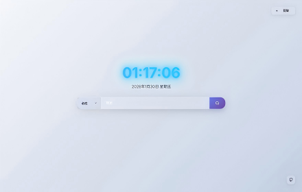
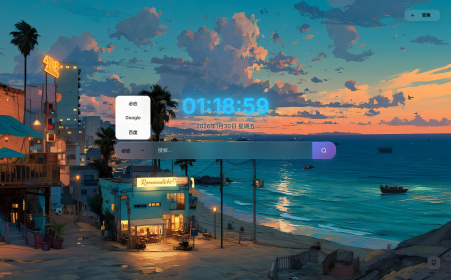

分组书签
常用网站按用途分组，组名与组的先后顺序均可调整。
常用网站按用途分组，组名与组的先后顺序均可调整。
支持组内换位与跨组移动，分组本身亦可拖动重排。
内置必应、Google、百度、GitHub，支持添加自定义引擎并设为默认。
通过扩展图标或页面右键菜单，将当前页面存入指定分组。
未确定归属的网站暂存于此，扩展图标显示待归类数量。
内置壁纸、本地上传、图片地址三种来源，可恢复默认背景。
网站图标按域名缓存在本地，离线打开照常显示。
导出为 JSON 文件，或同步至浏览器账号，多台设备保持一致。
时钟、日期与搜索框居中排布，网站分组位于其下，背景可换成本地图片。


进入「管理 → 分组管理」，新建分组，填写网站名称与地址。
在任意网页点击扩展图标，或使用页面右键菜单，选择目标分组。
进入「管理 → 配置同步」，导出配置文件，或同步至浏览器账号。
下载压缩包，解压到本地任意目录。
地址栏输入 chrome://extensions 或 edge://extensions，开启右上角的「开发者模式」。
点击「加载已解压的扩展程序」，选择上一步解压出的目录。